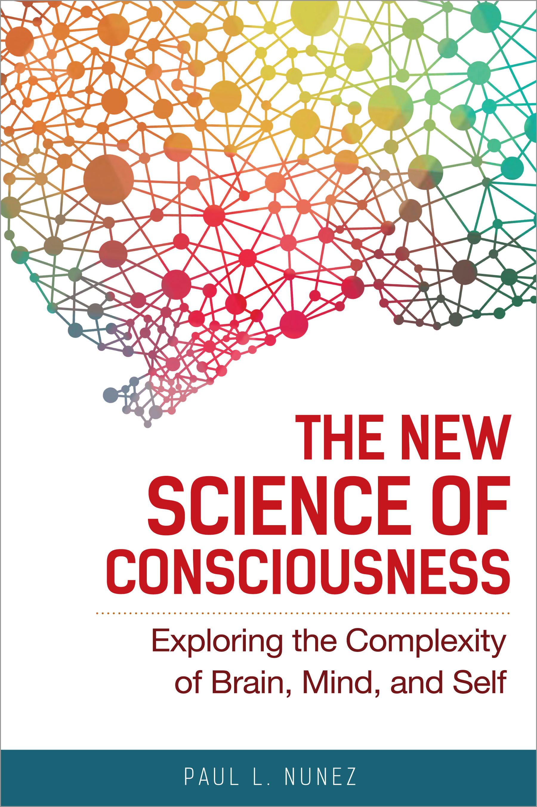

Welcome to Neuroscience of Consciousness
Course Material


{kind=link}
Altered Reality
After a head injury due to a fall at work, the patient had become delusional and hallucinatory, which had likely been exacerbated by alcohol abuse; this prompted him to be temporarily admitted to a psychiatric hospital. Ten years later, he was hospitalized again for delusions and hallucinations triggered by trouble with an inheritance. He received a diagnosis of schizotypal disorder and has been treated as an inpatient at a psychiatric hospital for about 10 years now.
According to a Japanese dictionary, ‘art’ is defined as ‘human activities or works of art that attempt to create and express beauty by means of special materials, methods or forms.’ In this light, it is questionable whether these pieces, a series of drawings on writing pads with no regards to techniques or an aesthetic sense, can be readily treated as art pieces. Rather, they may be more appropriately seen as an illustrated journal of his psychiatric symptoms.
However, this illustrated journal on symptoms offers a compelling charm beyond expression. One gazes at this illustrated journal and starts to imagine and experience his psychiatric symptoms as he might have gone through them. In clinical psychiatric practice, treatment often reaches a turning point when a patient’s inner world and suffering, which are both hard to communicate by words, are visualized and then relived and understood by the family and the therapist.
The patient kept this illustrated journal for over 20 years. In the journal, every drawing was sequentially numbered, revealing that his inner experience had a sense of continuity. When asked about the reason for his drawing, he says: ‘Drawing this helps me calm down.’ He stopped drawing in 2019, though. ‘I have drawn everything,’ he explains as to why he stopped. It does not go beyond my imagination, but I suspect that by keeping this journal he has finally come to terms with the symptoms that agonized him for so many years.

Philosophy and Consciousness
Consciousness is entwined with one of the fundamental concerns of philosophical thought, the problem of free will. Harley, p.4
Homunculus or “Cartesian Theater”
- Dualist concept that there’s a movie screen where all the senses project onto and the human is able to sit and watch.
What is a “self”? (Is it stable?, permanent?)
- Homunculus suffers from “Infine Regress”